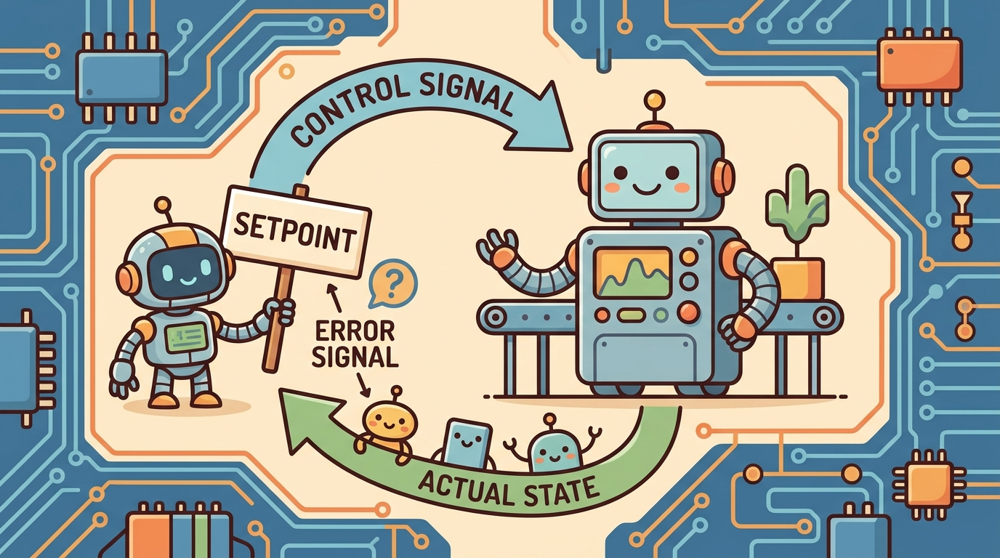

"Move the hand where it needs to go; let the rest of the body sort out how to follow without falling."
A Whole-Body Motion Planner, First Day With a Humanoid

This section assumes familiarity with the Jacobian and forward kinematics from sections 5.6 and 5.7. The priority-stack ideas introduced here are extended in full detail in section 46.3, where the same null-space projection is applied to a complete humanoid during locomotion and manipulation. The connection between operational-space commands and learned motion policies recurs in Part 9 alongside contact-rich manipulation.
A humanoid reaches for a cup while walking. Its 30-plus joints must simultaneously keep the center of mass over the support foot, swing the arm toward the shelf, and not spill. No single joint-angle target describes all of that at once. Operational-space control is the idea that matters: specify where the hand should be in the world, then let the controller sort out which joints move to get there. Whole-body control adds priority so that balance always wins over reach. Right now, every serious humanoid platform shipping hardware uses some form of this hierarchy. Understanding it tells you why learned policies trained in simulation can transfer to real bodies, and how to design the motion interface that makes that transfer reliable.
This section develops the technical contract for Operational-space and whole-body control (preview for humanoids) into a usable mental model. First we define the object of study, then we connect it to the agent loop, then we test it with a compact implementation.
The key question in Operational-space and whole-body control (preview for humanoids) is practical: what must the agent know, what can it observe, what action is available, and what evidence shows that the action worked under the stated conditions?
A representation earns its place when it changes the measurable action interface. In Operational-space and whole-body control (preview for humanoids), the reader should keep asking which decision becomes easier, safer, or more reliable.
Theory
Why does task-space control exist at all? A humanoid robot asked to "place the cup on the shelf" has 30 or more joints. Specifying a goal in joint coordinates requires knowing which combination of shoulder, elbow, wrist, and torso angles places the hand at the right position, an inverse problem that changes with every posture. Operational-space control inverts this: the designer specifies where the hand should go in Cartesian coordinates, and the controller figures out which joint motions achieve that. The same goal description works regardless of how the body is currently configured, which is why task-space formulations appear in nearly every walking and manipulation system deployed on real humanoid hardware. Whole-body control then adds the question of what happens to the rest of the robot while the hand moves: without explicit priority, a joint-level optimizer might satisfy the hand goal while letting the center of mass drift outside the support polygon, and the robot falls.
For Operational-space and whole-body control (preview for humanoids), the practical design rule is to make the interface inspectable before optimization begins: inputs, outputs, units, latency, bounds, and failure labels should all be visible in the saved artifact.
Operational-space control asks for motion in task coordinates, such as hand pose, foot force, or center of mass, rather than raw joint coordinates. The Jacobian $J(q)$ maps joint velocity to task velocity, $\dot x=J(q)\dot q$, so the controller can reason about what the robot's body does in the world. Whole-body control adds priority: balance and contact constraints usually outrank a hand motion, and remaining degrees of freedom can be used for posture, joint-limit avoidance, or energy management. To see why priority matters in practice, consider a 28-joint humanoid walking on one foot: the null space available for arm commands shrinks from roughly 10 dimensions to near zero, meaning a reach command that worked in double support is silently dropped in single support rather than destabilizing the robot.
A humanoid cannot treat every task as equally important. Foot contact, center of mass, collision margin, and torque limits define the safe feasible set. Arm reaching and expressive motion should live inside the remaining null space, otherwise the robot can satisfy a visible task while losing the body that makes the task possible.
Consider a specific case: the whole-body controller used on Boston Dynamics Atlas (Kuindersma et al., 2016, "Optimization-based locomotion planning, estimation, and control design for the Atlas humanoid robot") uses a hierarchical QP that places center-of-mass regulation and foot contact forces at the top priority, pelvis orientation second, and arm targets last. On a 28-degree-of-freedom body, the null space available for arm motion during double-support walking is roughly 10 dimensions; during single-support it drops to near zero, so arm references are silently sacrificed to keep balance. That is not a bug but the intended behavior of the priority stack: the safety contract is enforced by construction, not by runtime checks.
The mechanism in Operational-space and whole-body control (preview for humanoids) is the contract between representation and action. Name what enters the module, what leaves it, which assumptions make that transformation valid, and which log would reveal a bad handoff.
Worked Example
Whole-body control resolves task priorities with null-space projection. Given a primary task velocity \(\dot x_d\) and its Jacobian \(J\), the joint command is \(\dot q = J^\dagger \dot x_d + (I - J^\dagger J)\,u_\text{null}\). The first term meets the primary task; the projector \((I - J^\dagger J)\) restricts the secondary objective \(u_\text{null}\) to the directions that leave the primary task untouched. Code Fragment 7.6.1 runs this on a planar 3-link arm: the primary task is end-effector motion, the secondary is posture (pulling joints toward a rest pose). It then shows the priority guarantee saturating: once enough independent tasks are stacked, the null space collapses and there is no freedom left for posture.
import numpy as np
L = np.array([1.0, 0.8, 0.6]) # planar 3-link arm
def fk_jac(q):
# 2xN Jacobian of end-effector position w.r.t. joint angles.
J, ang = np.zeros((2, 3)), np.cumsum(q)
for i in range(3):
Jx = Jy = 0.0
for k in range(i, 3):
Jx += -L[k] * np.sin(ang[k]); Jy += L[k] * np.cos(ang[k])
J[0, i], J[1, i] = Jx, Jy
return J
q = np.array([0.3, 0.5, -0.4])
J = fk_jac(q)
Jp = np.linalg.pinv(J)
xdot_d = np.array([0.2, 0.0]) # primary: move +x, hold y
u_null = 1.0 * (np.zeros(3) - q) # secondary: pull joints toward rest pose
Nproj = np.eye(3) - Jp @ J # null-space projector of the primary task
qdot = Jp @ xdot_d + Nproj @ u_null
print("primary task error ||J*qdot - xdot_d|| =",
round(float(np.linalg.norm(J @ qdot - xdot_d)), 6))
print("secondary realized in null space, ||N u_null|| =",
round(float(np.linalg.norm(Nproj @ u_null)), 4))
# Stack a third independent task (end-effector orientation): null space saturates.
J3 = np.vstack([J, np.ones((1, 3))]) # x, y, and orientation = sum of joint angles
N3 = np.eye(3) - np.linalg.pinv(J3) @ J3
print("null-space trace with 3 independent tasks =", round(float(np.trace(N3)), 3),
"(0 => no DOF left for posture)")The fragment should expose task frame, Jacobian, contact constraints, priority, and torque or acceleration command. Whole-body stacks matter only after these control semantics are explicit.
When computing task-space Jacobians with Pinocchio, always call pin.computeJointJacobians(model, data, q) followed by pin.getFrameJacobian(model, data, frame_id, pin.ReferenceFrame.LOCAL_WORLD_ALIGNED) rather than the default LOCAL frame. The LOCAL reference expresses columns in the body frame of the link, so stacking Jacobians for two different end-effectors produces columns in incompatible frames and the null-space projector silently computes garbage. Use LOCAL_WORLD_ALIGNED throughout, verify by checking that the Jacobian's translational rows match a finite-difference of forward kinematics, and only then pass it to the QP solver.
Practical Recipe
- Write the observation, action, and success metric before choosing a model.
- Build a baseline that is simple enough to debug by inspection.
- Add the library implementation only after the baseline behavior is understood.
- Record failures as structured cases: perception error, state error, planning error, control error, or evaluation error.
- Run at least one perturbation test before trusting the result.
The most common failure is a frame mismatch between the task-space Jacobian and the contact constraint: the QP solver receives feet forces expressed in the world frame while the Jacobian columns are computed in a body-local frame, so the null-space projector silently cancels the intended arm motion instead of isolating it. On a real platform this shows up as the arm drifting to a rest pose the moment single-support begins, even though the reach command is still active. On Boston Dynamics Atlas hardware, a 5 ms state-estimation lag at the ankle IMU is enough to corrupt the foot-contact mode flag, which flips the top-priority constraint from double-support to single-support mid-step and causes the QP to sacrifice the arm reference without any error message. On Unitree H1, running the whole-body QP at 500 Hz in MuJoCo but only 200 Hz on the real motor controllers introduces a 5 ms command gap per cycle; integrated over a 1-second reach, this produces 8-12 mm of end-effector drift that does not appear in simulation. Always verify that the Jacobian reference frame, the contact-mode source, and the actuator command rate match between the simulator and the hardware target before trusting a task-space trajectory.
A robotics team using Operational-space and whole-body control (preview for humanoids) should log not only final success, but intermediate observations, chosen actions, controller status, and recovery events. The logs reveal whether the method is solving the task or merely passing the easiest episodes.
Treat operational-space and whole-body control (preview for humanoids) like a control-room label. If the label does not tell a future debugger what moved, what sensed, or what failed, it is decoration rather than engineering knowledge.
For Operational-space and whole-body control (preview for humanoids), treat frontier claims as hypotheses until they expose enough detail to reproduce the result: data boundary, embodiment, controller interface, evaluation panel, and failure cases.
Can you name the observation, state estimate, action, success metric, and most likely failure mode for Operational-space and whole-body control (preview for humanoids)? If not, the system boundary is still too vague.
Production Pattern
Operational-space and whole-body control (preview for humanoids) sits inside the Part II robotics contract: geometry defines where things are, kinematics defines what motion is possible, dynamics defines what motion costs, control defines how errors are corrected, and sensing defines what the agent can know on time.
Operational-space control must name task priorities, contact assumptions, and null-space behavior. This makes the section useful to students, builders, and researchers at the same time: the idea has an intuitive role, a formal interface, a runnable check, and a failure mode that can be reproduced.
For Operational-space and whole-body control (preview for humanoids), control closes the loop between estimated state and action. Keep reference, measured state, error signal, control law, actuator limits, and safety fallback separate in the evidence record.
| Tool or Library | What It Handles | Verification Check |
|---|---|---|
| python-control | analyzes linear systems, transfer functions, state-space models, and feedback loops | Verify units, sample time, poles, stability margin, and reference scaling. |
| CasADi | formulates optimization-based controllers with constraints and horizons | Verify constraints, warm start, solver status, and deadline behavior. |
| Drake | models dynamical systems, multibody plants, optimization, and controllers | Verify scalar type, plant finalization, frame convention, and solver status. |
| do-mpc | formulates optimization-based controllers with constraints and horizons | Verify constraints, warm start, solver status, and deadline behavior. |
| ROS 2 control | supports practical work on Operational-space and whole-body control (preview for humanoids) | Verify the library output against the hand-built baseline on one small case. |
Use this recipe when turning Operational-space and whole-body control (preview for humanoids) into code, a simulator experiment, or a robot diagnostic. The point is not to use every library. The point is to keep the hand-built baseline and the maintained-tool path comparable.
- Write the control objective, measured state, actuator command, update rate, and saturation policy.
- Run a step-response test before adding learning, with overshoot, settling time, and steady-state error logged.
- Compare the hand controller with python-control, CasADi, Drake, do-mpc, or ROS 2 control on the same plant model.
- Record latency, missed deadlines, saturation events, constraint violations, and recovery actions.
- Only compare controllers and policies when they share sensors, action limits, disturbance tests, and safety checks.
For Operational-space and whole-body control (preview for humanoids), compare methods only through one saved artifact that preserves the inputs, outputs, units, timestamps, latency budget, configuration, seed, metric definition, and failure labels relevant to this section. The comparison is meaningful only when the same script evaluates the same panel.
Extend the section exercise by adding one perturbation specific to Operational-space and whole-body control (preview for humanoids) and one latency or uncertainty check. Save the result in the EvidenceRecord schema, then explain which library output you trust and why.
A learned policy can hide a whole-body priority conflict until contact changes. Check frame conventions, Jacobian ordering, contact mode, torque limits, null-space projection, and fallback behavior before scaling training. For this section, first reproduce one small task-space command by hand, then rerun it through Drake, Pinocchio, MuJoCo, or the robot controller stack. If the two disagree, inspect frame transforms, contact assumptions, and which lower-priority task was sacrificed.
Technical Core
Operational-space and whole-body control (preview for humanoids) needs a topic-native core: variables, equations or system contracts, an algorithmic procedure, an expected output, and a failure diagnosis. Figure 7.6.T summarizes the chain this section must preserve when moving from a teaching example to a real embodied system.
Task velocity obeys $\dot x=J(q)\dot q$. A common whole-body controller solves for joint accelerations, torques, or velocities that reduce task error while satisfying contact, torque, and joint constraints. Lower-priority objectives are projected into the null space of higher-priority tasks so posture improvement does not break balance or contact.
- Define the reference, measured state, error signal, actuator command, update rate, and saturation policy.
- Run a step or disturbance response before adding learning.
- Log overshoot, settling time, steady-state error, latency, saturation, and recovery behavior.
- Compare PID, LQR, or MPC only under the same plant, sensors, limits, disturbance panel, and metric code.
| Contract Field | What To Specify | Why It Matters |
|---|---|---|
| State and observation | Variables, units, timestamps, frames, and uncertainty. | Prevents a model score from being mistaken for robot capability. |
| Action interface | Command type, limits, update rate, and safety fallback. | Makes the learned or planned output executable. |
| Evidence artifact | Trace, metric, configuration, seed, and failure label. | Allows baseline and library path to be compared in one pass. |
| Tool path | python-control, CasADi, do-mpc, Drake, ROS 2 control, MuJoCo | Shows the practical library route after the mechanism is understood. |
For Operational-space and whole-body control (preview for humanoids), expected output is a trace where the relevant error decreases, overshoot stays within the design bound, and actuator commands remain within limits under the stated timing budget.
Operational-space and whole-body control (preview for humanoids) should be stress-tested under delay, integral windup, actuator saturation, unmodeled friction, and reference-frame mismatch before the nominal trace is trusted.
Section References
Core references for Operational-space and whole-body control (preview for humanoids): Modern Robotics; Murray, Li, and Sastry; Siciliano et al.; LaValle; and official documentation for Drake, MuJoCo, Pinocchio, CasADi, python-control, GTSAM, ROS 2, and OpenCV as applicable.
Use these references to check notation, frame conventions, units, solver assumptions, and maintained-library behavior.
Operational-space and whole-body control (preview for humanoids) is useful when it makes the perception-action loop more reliable, not when it merely adds a more impressive model name.
Design a method-matched experiment for Operational-space and whole-body control (preview for humanoids). Specify the environment, observations, actions, metric, one perturbation, and the library output you would compare against the hand-built baseline.